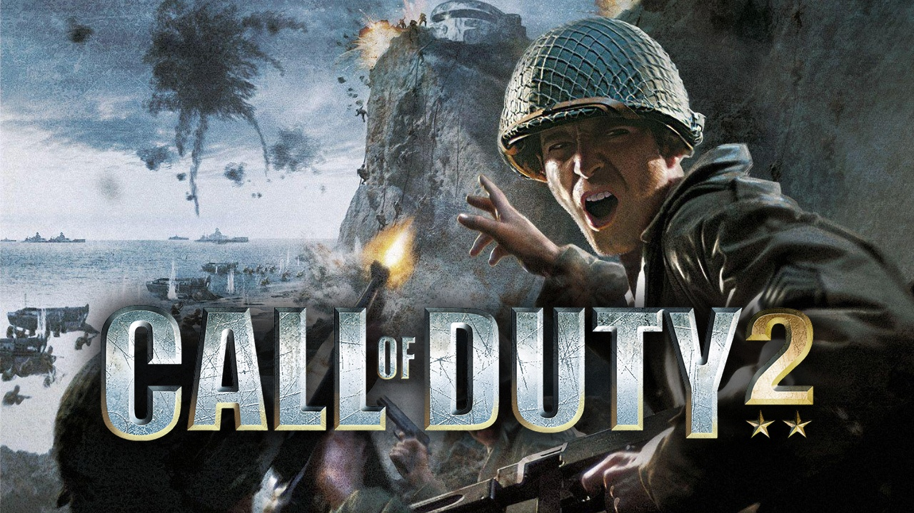
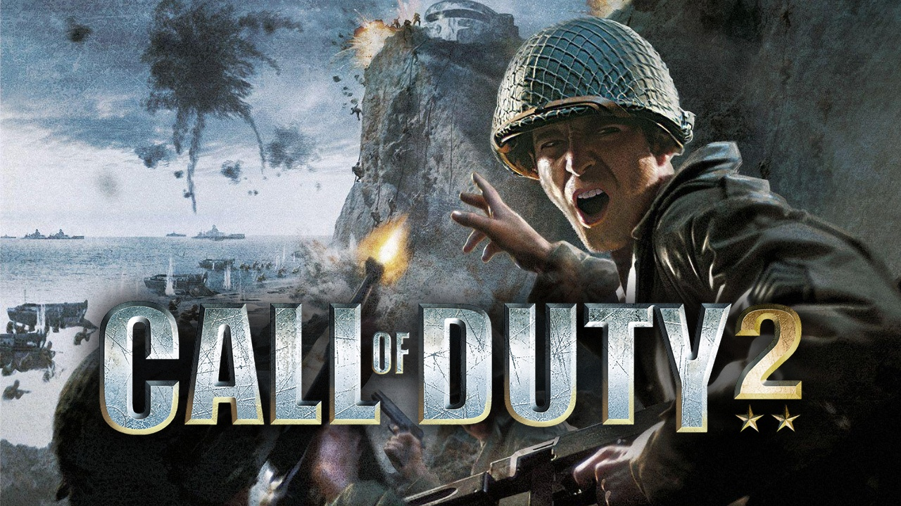

2003: CALL OF DUTY 1
Data de lançamento: 29 de outubro de 2003
Desenvolvedor: Infinity Ward
Vendas: 4,5 milhões
O primeiro Bacalhau começou a série na Segunda Guerra Mundial e apresentava uma
campanha de história e modos multijogador. Ele foi lançado pela primeira vez no PC, Mac e até
mesmo no dispositivo portátil N-Gage.
lorem gato lorem...